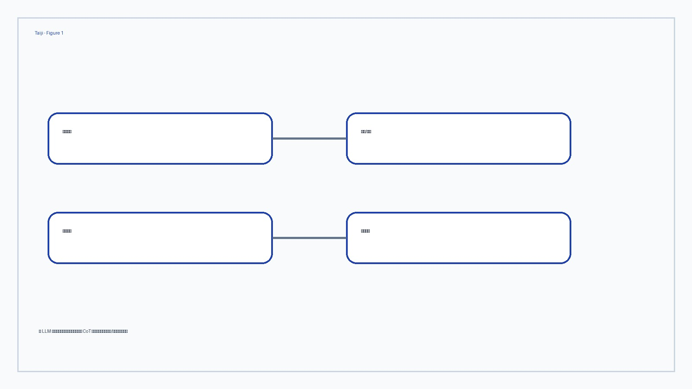
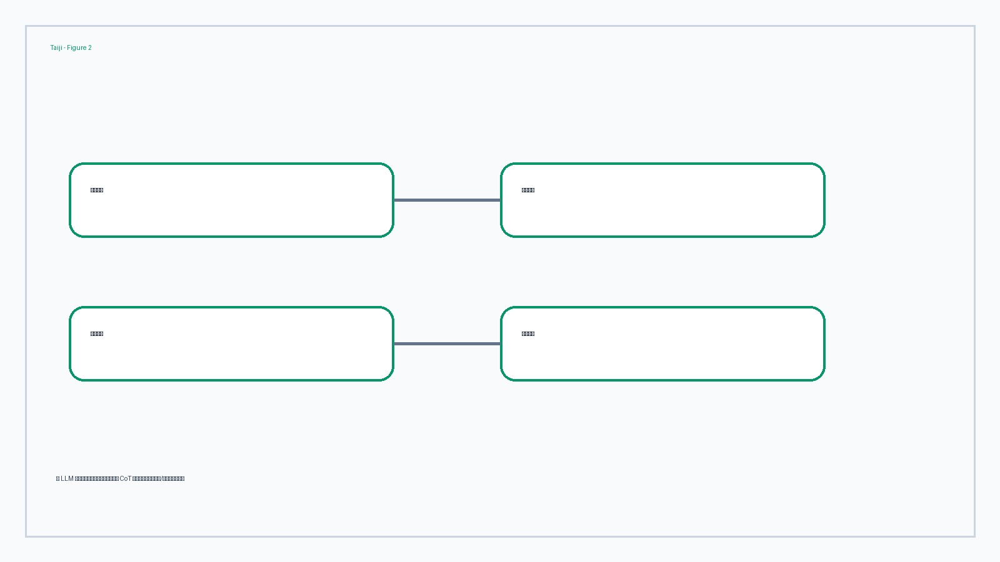
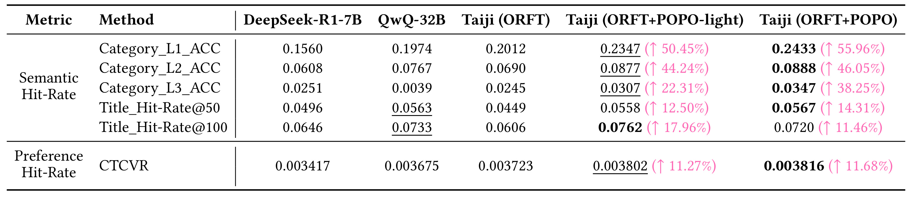
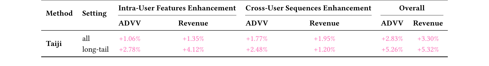
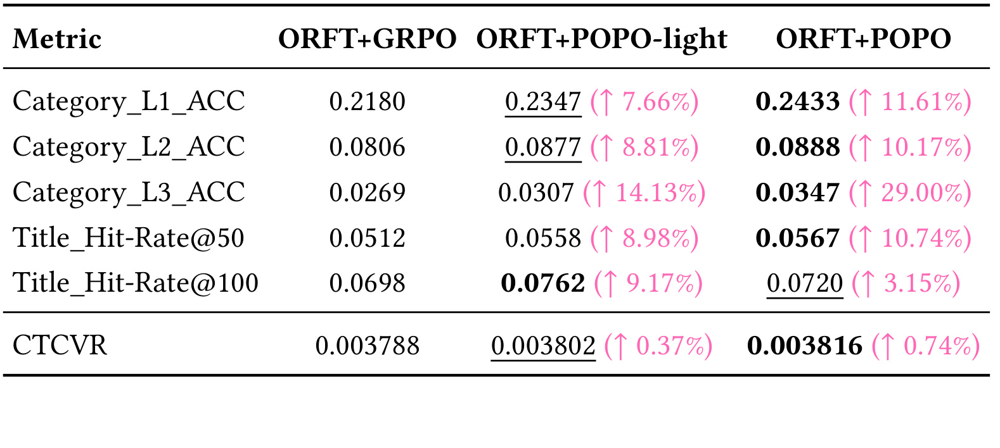

Taiji 这篇论文的唯一论文入口是 arXiv:2606.03866，标题为 “Taiji: Pareto Optimal Policy Optimization with Semantics-IDs Trade-off for Industrial LLM-Enhanced Recommendation”。PDF 作者信息显示 Yuecheng Li、Zeyu Song、Jing Yao、Chi Lu、Peng Jiang、Kun Gai 主要来自 Kuaishou Technology，并把系统部署在快手广告推荐平台；本地目录名沿用清华大学-Taiji。代码/项目页状态：本轮只核验 arXiv 页面和 PDF，没有把未打开的二级链接写成独立事实来源。主类别为推荐算法， secondary tags 包括 LLM4Rec、reinforcement alignment、industrial ranking、chain-of-thought distillation。
1. 背景和问题
Taiji 处理的是一个很现实的 LLM4Rec 断点：大模型擅长把用户画像、商品文本和行为历史组织成语义推理，但工业推荐最终吃进去的是 ID、交叉特征、点击转化概率、延迟预算和线上排序目标。过去几类 LLM-as-Enhancer 工作常把 LLM 作为语义特征生成器，或者用 SFT 让模型学会输出推荐理由，再把生成结果转成下游 ranking model 可用的特征。这样做比直接让 LLM 在线排序便宜，也更容易接入现有广告系统；问题是，它把最难的两个环节留在了中间：第一，推荐场景里的 CoT 没有唯一标准答案，一段看似流畅的购物理由可能和真实购买商品不一致；第二，RL 阶段同时存在 LLM 语义奖励和推荐 ID 奖励，二者不一定同向，固定权重会让训练在不同平台、不同用户密度、不同商品类别上出现偏向。
论文对第一类问题的观察很具体。数学题或封闭问答可以检查最终答案是否正确，推荐解释却常是开放式的：同一个用户过去买过裙子、耳饰、凉鞋和床单，模型可以写出“夏季穿搭需求”，也可以写出“家庭床品升级需求”，两段文字都像人话，但只有后者更贴近下一次购买的床罩。Taiji 因此不用“教师模型生成的 CoT 天然可信”这个假设，而是把真实在线日志里的 ground-truth item 放进反推过程，让教师模型围绕已知下一购商品生成用户偏好推理，再用 PPL 判断这条推理能否帮助模型更高概率地产生目标商品。这个设计的重点不是让 CoT 更长，而是让 CoT 和推荐目标之间有可测量的联系。
第二类问题来自强化学习对齐。LLM 语义 reward 可以奖励生成答案和真实商品文本的相似度，推荐 ID reward 则来自广告排序模型对 user-item 交互的 CTCVR 估计。语义空间关心文字描述、类别层级和世界知识，ID 空间关心平台内协同过滤和用户行为分布。若两个 reward 固定一半一半，训练可能在某些阶段过分追求语义相似而损失真实偏好，也可能过分贴近短期 ID 信号而丢掉 LLM 对长尾用户和冷门商品的泛化价值。Taiji 用 POPO 把这件事显式建模为跨域 reward 的动态权衡，目标不是让一个 reward 永远压过另一个 reward，而是在训练中沿着 Pareto 前沿移动。

Figure 1 展示了这篇论文的完整链路。Stage 1 从生产平台在线日志采样用户画像、近期行为和真实目标商品，通过 reverse-engineered prompt 让 QwQ-32B 生成推荐理由；Stage 2 用 PPL 过滤候选 CoT，并对 DeepSeek-R1-7B 做 ORFT；Stage 3 在 RL 阶段把 LLM semantic reward 和 recommendation ID collaborative reward 组合起来，并用 POPO 或 POPO-light 动态调权；Stage 4 则把后训练 LLM 的输出转成两类下游特征，一类是 Qwen-Embedding 后的 quantized sparse user features，另一类是基于 LLM embedding 检索出的 similar user sequences，最终进入在线广告 ranking model。图里最重要的不是“用了 LLM”这件事，而是每一步都对应现有推荐链路中的一个接口：日志、教师蒸馏、SFT/RL、近线推理、特征写入、在线排序。
这也解释了 Taiji 为什么值得单独精读。它不是把大模型当黑盒 reranker，也不是只报告一个离线 LLM 指标，而是试图把推荐系统里最难统一的两个坐标系放到同一个训练流程：语义坐标系负责解释用户为什么可能购买某类商品，ID 坐标系负责约束这个解释是否对应真实点击转化概率。论文的商业场景是快手广告服务，抽样数据达到百万级，线上 A/B 覆盖全量和长尾用户，并声称 2026 年 5 月以来服务超过 4 亿日活用户。这些数字让它有明显工业价值，但也要求阅读时保持边界：PDF 没有公开原始数据、排序模型细节和完整线上实验日志，因此我们可以分析方法结构和表格结果，不能把相对提升直接外推到其他平台。
从每日推荐系统论文筛选的角度看，Taiji 的背景价值还在于它把“LLM 参与推荐”从概念层面压回了可部署链路。许多论文把用户历史直接交给 LLM 生成推荐列表，但广告系统里排序候选规模、延迟预算、特征一致性和线上回滚要求都不允许这种方式直接替代主排序。Taiji 选择让 LLM 只生产可缓存、可量化、可拼接的用户语义特征与相似用户序列，等于承认传统 ranking model 仍是线上决策核心。这种定位更符合大厂推荐系统的工程现实，也让论文的贡献集中在“如何让 LLM 特征真的对业务 reward 有帮助”，而不是停留在 prompt 工程。
2. 方法
2.1 数据构造与 RUPR：从在线日志反推推荐理由
Taiji 的第一步不是训练模型，而是重新组织训练样本。论文从快手短视频平台在线日志中采样用户数据，把用户 profile、最近一个月行为序列和 ground-truth next purchased item 串成可读文本。用户 profile 包括性别、年龄段、地域、婚育、消费偏好等信息；行为序列保留最近 50 条广告交互，并把每个商品的 title、多级 category、price 等元信息模板化。这个序列化过程看似普通，但它决定了后续 LLM 看到的是“推荐系统的文本化状态”，而不是传统稀疏 ID 表。若这里缺少近期行为或商品类目，后面的 CoT 再流畅也无法精确定位用户意图。
RUPR 的关键在于反推。普通蒸馏会让教师模型根据用户信息直接预测可能购买的商品并解释理由；Taiji 则把真实下一购商品一并放入 prompt，让 QwQ-32B 围绕这个 ground-truth item 生成用户偏好推理。这样生成的 CoT 不再是开放想象，而是被真实日志锚定：它要解释为什么这个用户会买这个商品，而不是泛泛描述用户可能喜欢什么。对工业推荐而言，这一步把监督信号从最终 item label 扩展到中间 reasoning trajectory，使后续 SFT 可以学到“如何从行为序列组织购买理由”。
这个设计也有一个容易误读的地方：RUPR 并不保证每条 CoT 都正确。教师模型可能看到目标商品后仍然编出不合理路径，也可能把用户历史中的某些偶然行为过度解释。因此 Taiji 没有把 RUPR 输出直接全部用于 SFT，而是进入 ORFT 的筛选环节。RUPR 负责把“没有推理监督”的推荐日志变成候选推理集合，ORFT 负责从这些候选中挑出和真实商品更一致的路径。两者合在一起，才构成论文所谓 SFT bottleneck 的解法。
2.2 ORFT：用 PPL 把开放式 CoT 变成可筛选样本
ORFT 的核心指标是目标商品在给定上下文和 CoT 条件下的 perplexity。论文把用户 query、profile、behavioral history 和候选 CoT 作为 context，把 ground-truth answer sequence 记为 $y=[y_1,y_2,...,y_T]$，然后计算：
符号解释：$T$ 是目标答案的 token 数，$y_t$ 是答案中的第 $t$ 个 token，$context$ 包含 query、user profile、behavioral history 和候选 CoT。PPL 越低，表示在这条 CoT 作为条件时，模型越容易生成真实目标商品；若 PPL 高于阈值 $R$，说明这条推理虽然可能语言通顺，但没有帮助模型靠近 ground-truth item。论文用验证集 PPL 分布的中位数设定 $R=4.6$，每个用户 prompt 由 QwQ-32B 生成 $k=3$ 条候选 CoT，最终每个 prompt 保留 0 到 3 条。

Figure 2 把 ORFT 的作用讲得很清楚。左侧 CoT_1 把用户解释为夏季穿搭需求，最后推断可能继续购买包或凉鞋；但真实 target item 是床罩，PPL=28.4 大于阈值，因此这条 CoT 被拒绝。右侧 CoT_2 识别到用户近期浏览床单和家庭纺织品，推断她可能升级卧室用品，PPL=1.2 小于阈值，于是被保留。这里的 PPL 不是通用语言流畅度，而是“这段理由是否让目标商品更可预测”的条件概率检查。它解决了开放推荐解释难以人工逐条标注的问题，也避免把教师模型的错误联想直接灌进学生模型。
筛完样本后，论文对 DeepSeek-R1-7B 做监督微调。训练样本的输出同时包含 <think> Refined CoT </think> 和 <answer> Item title; Category L1; Category L2; Category L3 </answer>，目标函数是标准 next-token prediction：
符号解释：$N$ 是 batch size，$q_i$ 是第 $i$ 个输入 query，包含用户画像和行为历史；$t_j$ 是完整输出序列中的第 $j$ 个 token，$l_i$ 是该输出序列长度。这个 loss 没有特殊之处，关键在训练数据已经被 RUPR 和 PPL 过滤过。换句话说，Taiji 把复杂性放在数据构造和样本选择，而不是发明一个新的 SFT 损失。
2.3 双奖励：语义空间和 ID 空间各自给分
SFT 后，LLM 已经能生成更符合推荐场景的 reasoning 和 answer，但论文认为仅靠 SFT 仍不足以跨用户、跨商品模式泛化。因此 Stage 3 引入 GRPO-like reinforcement learning。这里有两个 reward source。第一个是 LLM semantic reward $r_s$，用 Qwen3-Embedding-0.6B 分别编码 LLM 生成的 answer 和真实 item description，再计算 cosine similarity：
符号解释：$e_{pred}$ 是生成答案的语义 embedding，$e_{gt}$ 是真实商品描述的 embedding。这个 reward 看的是文本语义是否接近，例如模型生成“床品、床罩、家纺升级”是否接近真实床罩商品，而不是用户是否真的会点击转化。它的优势是能利用 LLM 的世界知识和类目泛化能力，尤其在长尾商品、长尾用户、稀疏行为场景下可能比纯 ID 统计更有补充价值。
第二个 reward 是 recommendation ID collaborative reward $r_{id}$。它来自线上广告排序模型对用户 $u$ 和预测商品 $i$ 的 CTCVR 估计：
符号解释：$u$ 表示用户，$i$ 表示预测商品或 item，$CTCVR$ 是点击且转化的联合概率估计。这个 reward 把平台内部的协同过滤、用户行为、商品交叉特征和历史标签引入 LLM 训练。它比语义相似更贴近广告系统的业务目标，但也更依赖平台分布和排序模型本身。如果只优化 $r_{id}$，LLM 可能学到短期偏好或平台 bias；如果只优化 $r_s$，模型可能语义上合理但无法带来真实转化。Taiji 的方法章真正要解决的就是这两个 reward 之间的动态协调。
2.4 POPO：用动态权重逼近跨域 Pareto 前沿
POPO 把 reward source 集合记为 $K=\{s,id\}$，分别对应语义 reward 和 ID reward。对每个 reward $r_k$，可以得到一个由该 reward 诱导的 GRPO objective $L_k(\theta)$。如果使用固定权重，训练目标就是把两个 objective 线性混合；但论文指出跨域 reward 的 Pareto front 往往非凸，固定权重难以适应训练阶段变化。POPO 因此在第 $t$ 次 RL 迭代维护 reward 权重 $w_k^{(t)}$，并用指数梯度形式更新：
符号解释：$\eta^{(t)}$ 是学习率，$\mu$ 是正则因子，$\odot$ 是逐元素乘法，$\mathbf{I}^{(t)}$ 是每个 reward 的 gradient alignment indicator。对第 $i$ 个 reward，论文用它的梯度和所有 reward 梯度和之间的内积衡量对齐程度：
符号解释：若某个 reward 的梯度方向和总体方向一致，且能推动多个目标共同改善，它的权重会上升；若该 reward 和其他目标冲突，它的权重会被压低。这个机制对应论文中的 Pareto-optimality guarantee：权重和策略的 stationary point 满足不存在另一个策略能在所有 reward 上不差且至少一个 reward 更好的条件。实际阅读时可以把它理解为“让有协同进展的 reward 暂时更响，让制造冲突的 reward 暂时降音量”。
完整 POPO 要计算跨域梯度内积，工业 RL 训练成本不低。论文还给出 POPO-light，用 rollout-level reward 统计近似每个 reward 的优化潜力：
符号解释：$\mu_i^{(t)}$ 和 $\sigma_i^{(t)}$ 分别是第 $i$ 个 reward 在当前 rollout group 内的均值和标准差，$\epsilon$ 防止除零。这个式子就是 coefficient of variation。若某个 reward 在候选回答之间仍有较大区分度，说明当前策略沿这个方向还有学习空间，权重应变大；若 reward 已经饱和，方差变小，权重自然衰减。POPO-light 不需要额外反向传播，适合 web-scale 训练；完整 POPO 则更贴近论文理论保证。
最终策略优化采用 POPO-weighted GRPO loss。论文把旧策略 $\pi_{\theta_{\mathrm{old}}}$ 采样的 $G$ 个候选回答用于 group normalization，使用 clipped ratio 和 KL 正则稳定更新：
符号解释：$G$ 是每个 query rollout 的候选回答数，$o_i$ 是第 $i$ 个回答，$\rho_{i,t}(\theta)$ 是新旧策略概率比，$\hat{A}_{i,t}$ 是由 POPO 加权 reward 得到的 group-normalized advantage，$\eta$ 是 KL 正则权重，$\pi_{ref}$ 是参考策略。公式层面看，Taiji 没有改变 GRPO 的稳定更新骨架，而是改变 advantage 背后的 reward mixture，让 semantic reward 和 ID reward 的权重随训练状态变化。
更细地看，POPO 解决的是推荐训练里常见的 reward masking 问题。语义 reward 和 ID reward 都可能在局部看起来“正确”，但它们给梯度的方向不一定一致：语义 reward 可能鼓励模型输出与商品标题接近的类目词，ID reward 可能鼓励模型贴近平台排序模型已经学到的高转化商品簇。如果简单相加，训练会把这种冲突隐藏到一个总分里，后续只能通过离线指标掉点才发现问题。POPO 把每个 reward 对总体更新方向的贡献显式拿出来，用权重更新机制把冲突暴露在训练过程中，因此它比固定混合更像一个多目标控制器，而不是一个经验超参。
2.5 在线排序接入：稀疏语义特征和跨用户序列
Taiji 最后一步是把 RL-aligned LLM 接进广告排序，而不是让 LLM 直接在线生成推荐列表。论文做了两类增强。第一类是 intra-user feature enhancement：近线使用后训练 LLM 对 live user data 进行推理，得到用户偏好 CoT 和 item 信息，再用 Qwen-Embedding 编码并 product quantize 成 sparse user features。这些特征和传统特征拼接后进入 online ad ranking model。这样做可以把 LLM 对用户意图和商品语义的理解转成低成本可服务特征，避免在线每次请求都调用大模型。
第二类是 cross-user sequence retrieval：在 LLM-generated embedding space 中寻找和目标用户最相似的用户，取相似用户最近 100 条行为序列作为补充特征。这个模块的动机是协同过滤：当目标用户历史较短或最近行为稀疏时，相似用户序列可能提供额外偏好证据。它和 RUPR/ORFT 的关系也很清楚：前面训练 LLM 生成更可靠的用户语义表示，后面才用这个表示做 U2U retrieval。若 LLM 表示不稳定，跨用户序列就可能引入噪声；若表示经过 ORFT 和 POPO 对齐，retrieval 才更可能服务于 ranking model。
从工程角度看，Taiji 的方法边界主要有三条。第一，LLM 后训练发生在离线或近线，在线排序仍由成熟 ranking model 承担，因此系统成本可控。第二，reward 中的 CTCVR 来自生产排序模型，这让训练目标贴近业务，但也意味着外部复现很难完全等价。第三，POPO 的动态权重依赖 reward 统计或梯度信号，若语义 reward 与 ID reward 的尺度、噪声、延迟不稳定，权重更新可能需要额外监控。论文给出的 POPO-light 是实用折中：牺牲部分理论解释，换取低额外开销和可部署性。
把这套方法拆到实现层面，可以看到每个模块都有清晰的失败模式。RUPR 失败时，候选 CoT 会围绕真实 item 写出牵强故事，导致后续学生模型学到伪解释；ORFT 失败时，PPL 可能偏向短标题或常见类目，使筛选结果不一定等价于真实偏好质量；semantic reward 失败时，embedding 相似度可能奖励同义词堆叠而不是购买意图；ID reward 失败时，排序模型自身偏差会被蒸馏进 LLM。POPO 的价值正是在这些失败模式之间提供一个训练期的调节接口，但它不能替代数据审计和线上监控。因此，若把 Taiji 迁移到其他业务，最先要验证的不是最终 ADVV，而是每个中间接口是否能单独产生可信信号。
还有一个实现细节值得强调：Taiji 的 LLM 输出并不是直接成为最终推荐理由，而是要先经过 embedding、product quantization、similar-user retrieval 和 ranking feature join。这个链路要求离线训练目标、近线特征生产和在线模型消费三者保持同一语义口径。若 ORFT 训练出的 CoT 模板和线上 live user data 的字段分布不一致，LLM 生成的 embedding 可能漂移；若 PQ 码本更新节奏和 ranking model 训练节奏不同，语义稀疏特征可能出现新旧版本混用；若相似用户序列没有做好时间截断，还可能引入未来信息或跨实验污染。因此 Taiji 虽然在论文中呈现为一个后训练算法，真正上线时更像一套数据-模型-特征联合系统，质量门槛应覆盖样本生成、reward 计算、特征稳定性和线上回滚。 特别是在广告系统中，reward 延迟和预算分配会改变训练反馈的含义，POPO 权重最好与分桶监控、特征版本和业务 guardrail 一起观察，并做异常报警。
3. 实验结果
3.1 离线主结果
论文实验使用 1.11 million 用户记录：1 million 用于 SFT，100K 用于 RL，10K 作为 test dataset。每个 SFT 用户样本由 QwQ-32B 生成 $k=3$ 条推荐 CoT，PPL 截断阈值 $R=4.6$ 来自 2.3K validation samples 的中位数。基础模型是 DeepSeek-R1-7B，SFT 做 1 epoch，RL 也做 1 epoch，训练资源是 3 nodes，每个节点 8 张 A800。离线指标分成两组：Semantic Hit-Rate 包括 Category_L1/L2/L3 accuracy 和 Title_Hit-Rate@50/100；Preference Hit-Rate 使用离线模拟的 CTCVR。这个设置把“LLM 是否懂商品语义”和“输出是否贴近平台偏好”分开评估，正好对应方法章的双 reward。

Table 1 的结果可以分三层读。第一，Taiji (ORFT) 相比 DeepSeek-R1-7B 在 Category_L1_ACC、Category_L2_ACC 和 CTCVR 上已经有明显提升，说明 RUPR+ORFT 不是只让文字更长，而是能激活推荐场景推理。第二，QwQ-32B 作为教师模型在部分 title hit-rate 上强，但在 Category_L3_ACC 上非常低，说明大教师并不天然适配所有推荐细粒度任务；Taiji 通过反推样本和对齐训练，反而能在小模型骨架上获得更稳定的细粒度类目效果。第三，Taiji (ORFT+POPO) 在 Category_L1_ACC 达到 0.2433，相对 DeepSeek-R1-7B 提升 55.96%；Category_L2_ACC 达到 0.0888，提升 46.05%；Category_L3_ACC 达到 0.0347，提升 38.25%；CTCVR 达到 0.003816，提升 11.68%。这些结果支持论文的主张：完整 POPO 不是牺牲偏好指标换语义指标，而是在表中同时改善两类指标。
也要注意，Table 1 的 Title_Hit-Rate@100 上完整 POPO 是 0.0720，低于 POPO-light 的 0.0762，也略低于 QwQ-32B 的 0.0733。这个细节说明 Pareto 调权不是所有单项指标都最大化；它更像是在多目标之间寻找整体可接受的平衡。若应用场景只关心 title recall，POPO-light 或教师模型可能在该项更有吸引力；但若同时看多级类目和 CTCVR，完整 POPO 的综合表现更贴近论文目标。
3.2 线上 A/B 与长尾用户收益
线上实验是 Taiji 最有工业含量的部分。论文把 10% traffic 分配给 baseline，10% 分配给 Taiji，实验持续一周，指标是 advertiser value ADVV 和 platform Revenue。Table 2 分别报告 intra-user feature enhancement、cross-user sequences enhancement 和 overall 三组提升，并把用户分成 all 与 long-tail。

Table 2 显示，全量用户下 intra-user features 带来 ADVV +1.06%、Revenue +1.35%，cross-user sequences 带来 ADVV +1.77%、Revenue +1.95%，overall 达到 ADVV +2.83%、Revenue +3.30%。长尾用户收益更高：overall ADVV +5.26%、Revenue +5.32%。这个结果和方法假设一致，因为长尾用户行为稀疏，传统 ID 特征覆盖不足，LLM 生成的语义偏好和相似用户序列更容易补上缺失信号。对广告推荐来说，ADVV 和 Revenue 同时提升也比只提升点击率更有说服力，至少说明系统没有只把流量推向更容易点击但商业价值较低的商品。
不过线上表仍有边界。PDF 没有给 baseline ranking model 的结构、线上随机化细节、置信区间、分桶流量、指标统计检验和长期留存影响；因此只能把 Table 2 视为作者报告的 A/B 结果，不能复算显著性。尤其长尾用户提升较高，可能同时受到样本划分、历史稀疏程度、商品类目分布和广告主预算变化影响。若后续复现或类比到其他平台，必须先确认长尾定义、线上 ranking model 接口和 CTCVR calibration 是否一致。
3.3 POPO 消融
论文第 7 页还有两个消融表。Table 3 检查 RUPR：不用 RUPR 时，CoT 和 item prediction 直接由 QwQ-32B 生成；使用 RUPR 时，在线日志 ground-truth label 会指导 reasoning。该表本次按要求不截图，但正文必须保留结论：RUPR 对格式准确率和语义命中都有贡献，尤其 Category_L3_ACC、Title_Hit-Rate@50/100 等细粒度指标改善更明显。这说明 reverse-engineered label 不是简单 prompt decoration，而是让教师模型围绕真实购买目标构造更可用的 reasoning。

Table 4 直接验证 POPO。固定权重 GRPO 的 Category_L1_ACC 为 0.2180，POPO-light 提升到 0.2347，完整 POPO 提升到 0.2433；Category_L3_ACC 从 0.0269 到 0.0307，再到 0.0347；CTCVR 从 0.003788 到 0.003802，再到 0.003816。这个趋势很关键：如果动态权重只是把优化从推荐偏好挪到语义相似，那么 CTCVR 可能下降；但表中 CTCVR 也随 POPO 增加。这支持作者关于 Pareto 前沿的说法，即动态调权在该实验设置下没有简单牺牲一侧目标，而是找到更协同的更新方向。
POPO-light 的表现也值得单独看。它在多数指标上介于固定 GRPO 和完整 POPO 之间，且 Title_Hit-Rate@100 高于完整 POPO。结合方法章，POPO-light 用 reward 方差/均值比近似优化潜力，不算梯度内积，因此更便宜。若工业系统更关注训练吞吐、部署稳定性和工程复杂度，POPO-light 可能是先落地版本；若有能力承担额外梯度统计，完整 POPO 更符合论文理论目标。
综合实验部分，Taiji 的证据链是完整的：Table 1 证明离线多目标提升，Table 4 证明 POPO 动态权重相对固定权重有效，Table 2 证明这些特征可以在广告线上系统转化为 ADVV 和 Revenue。缺失的是外部可复现材料：数据、代码、ranking model、A/B 统计细节都没有公开。因此本笔记把结果解读为“论文内证据支持”，而不是可独立复验的行业通用结论。
4. 总结
Taiji 的核心贡献可以压缩成一句话：它把 LLM4Rec 的后训练从“生成更像推荐理由的文本”推进到“让推荐理由在语义空间和 ID 偏好空间之间动态对齐”。RUPR 用真实下一购商品反推 CoT，ORFT 用 PPL 丢掉与目标商品不一致的推理，POPO 用动态 reward 权重协调 LLM semantic reward 和 recommendation ID reward，最后把后训练 LLM 的输出转成 online ranking model 可消费的稀疏语义特征与跨用户序列。这条链路的价值在于它尊重工业推荐的既有架构：LLM 不直接替代排序模型，而是作为增强器改善特征和用户理解。
我对这篇论文的判断是：方法主线清楚，工业证据强于普通 LLM4Rec 论文，但复现门槛很高。强点包括四个：第一，CoT 质量评价不是凭教师模型自信，而是用 ground-truth item 条件概率做筛选；第二，双 reward 明确区分语义相似和用户偏好，不把二者混为一个分数；第三，POPO-light 给了低成本近似，说明作者考虑了训练开销；第四，线上 A/B 把离线收益落到 ADVV 和 Revenue，而不是只停留在 academic benchmark。
局限也很明确。第一，数据来自快手广告平台，外部无法确认用户样本、商品分布和 ranking model 校准方式。第二，RUPR 依赖 ground-truth next purchased item 反推，适合有高质量日志的平台，但对冷启动新平台或数据稀疏业务并不天然可用。第三，PPL 阈值用中位数设定，简单可操作，但不同类目、不同商品标题长度、不同用户行为复杂度下可能需要分层阈值。第四，POPO 的理论保证建立在优化近似和 reward 可比的前提上，真实系统里的 reward 延迟、噪声和漂移可能让权重更新需要更多监控。第五，线上实验缺少置信区间和长期指标，不能判断收益是否稳定覆盖多周期预算和用户体验。
后续值得跟进三件事。其一，等待作者是否释放代码、训练细节或更多附录，尤其是 reward normalization、POPO-light 具体实现和线上特征写入细节。其二，把 Taiji 和 RecLM、Rec-R1、DEEPER、LangPTune 等 RL-based LLM-as-Enhancer 工作并表，比较 reward 来源、动态调权、线上证据和部署成本。其三，若要迁移到自己的推荐链路，应先做小规模离线审计：检查日志能否构造 RUPR prompt，PPL 是否真的能区分好坏 CoT，semantic reward 与业务 reward 是否冲突，以及 LLM 输出特征接入 ranking model 后是否有稳定增益。